19. Bayesian ANOVA
Parameter estimation & hypothesis testing
Course literature
JASP version in IWO
Bayesian parameter estimation
What is a model?
What does a model predict?

Model with multiple values

One-sided model
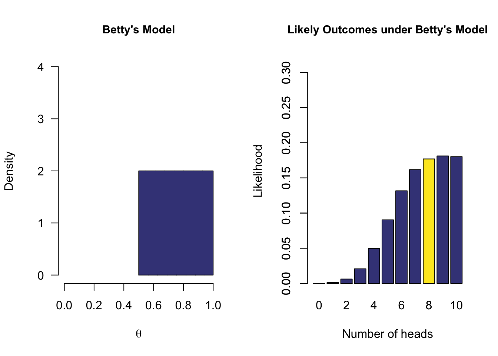
Prior distribution - (\(P(\theta)\))
Each model has assigned a prior probability distribution to the parameter \(\theta\) by means of a probability distribution. In the case of a proportion, a convenient distribution is the Beta distribution because it also has a domain of [0,1].
Now what is the data saying
Ten coin tosses
\(\begin{aligned} k &= 8 \\ n &= 10 \end{aligned}\)
k = 8
n = 10Likelihood function - \(P(data | \theta)\)
How likely is 8 out of 10 for all possible \(\theta\) values?
\[\binom{n}{k} \theta^k (1-\theta)^{n-k}\]
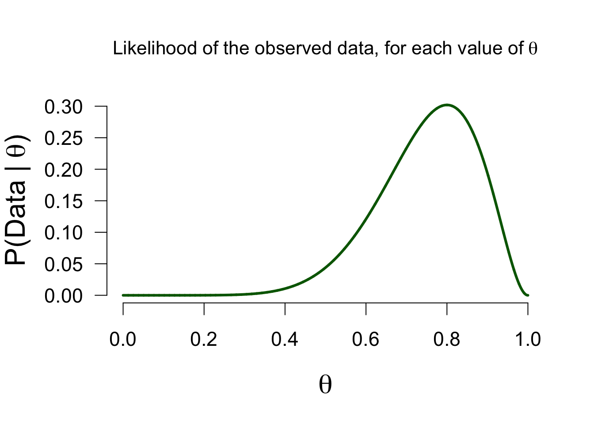
Marginal likelihood - \(P(data)\)
How likely is 8 out of 10 for all \(\theta\) values in the model, on average?
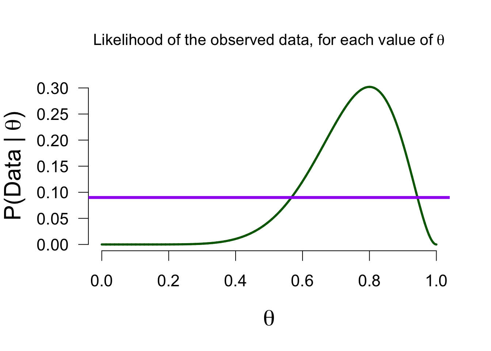
Posterior
Now we can update Alex’ belief about the possible values of theta based on the data (the likelihood function) we found. Values with a likelihood higher than the average likelihood receive a boost, and others receive a penalty, in plausibility.
Updating beliefs

Posterior distribution - \(P(\theta | data)\)

Bayesian estimation
The posterior distribution is a probability distribution, so we can make probabilistic statements based on it:
In the Bayesian framework, this is known as the credible interval. This interval entails taking the middle \(x\)% of the posterior distribution. For instance, we can take a 95% credible interval, which ranges from \(0.482\) to \(0.940\) in this case. This means that under Alex’s model, there is a 95% probability that the true value of \(\theta\) is between \(0.482\) and \(0.940\).
Take home message
- Bayesians quantify uncertainty through distributions.
- The more peaked the distribution, the lower the uncertainty.
- Incoming information continually updates our knowledge; today’s posterior is tomorrow’s prior.
Bayesian hypothesis testing
Bayesian Hypothesis Testing
- \(H_0\), the null hypothesis. For instance \(\theta = .5\) (people cannot taste the difference between alcoholic and non-alcoholic beer).
- \(H_A\) is the hypothesis that relaxes the restriction imposed by \(H_0\), and instead considers multiple values for \(\theta\).
Prior Belief
\[\large \underbrace{\frac{P(H_A \mid data)}{P(H_0 \mid data)}}_\textrm{Posterior odds} = \underbrace{\frac{P(H_A)}{P(H_0)}}_\textrm{Prior odds} \times \underbrace{\frac{P(data \mid H_A)}{P(data \mid H_0)}}_\textrm{Bayes Factor}\]
Bayes Factor
\[\underbrace{\frac{P(data \mid H_A)}{P(data \mid H_0)}}_\textrm{Bayes Factor}\] A ratio of the marginal likelihood of the data for the alternative and the null models.
A Bayes factor of \({BF}_{10} = 3\), means that the data are 3 times more likely under the alternative model than under the null model.
Bayes Factor
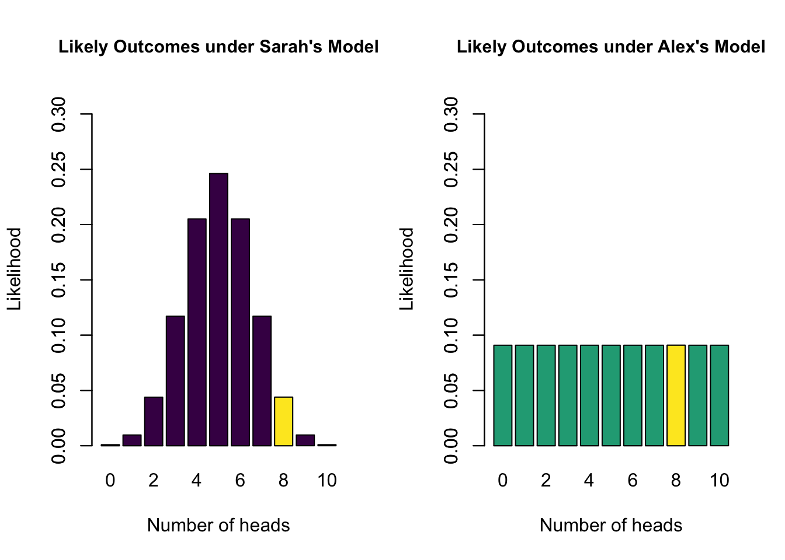
- Sarah’s model has a marginal likelihood of 0.04 for 8 heads
- Alex’s model has a marginal likelihood of 0.09 for 8 heads
- \(\text{BF}_{SA} =\) 0.04 / 0.09 = 0.44
- The data are 0.44 times more likely under Sarah’s model than under Alex’s model
- The data are 2.25 times more likely under Alex’s model than under Sarah’s model
Heuristics for BF
Heuristics for the Interpretation of the Bayes Factor by Harold Jeffreys
| BF | Evidence |
|---|---|
| 1 – 3 | Anecdotal |
| 3 – 10 | Moderate |
| 10 – 30 | Strong |
| 30 – 100 | Very strong |
| >100 | Extreme |
BF pizza

BF pizza
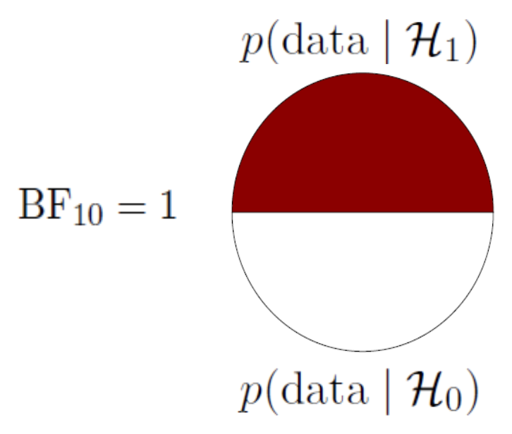
BF pizza
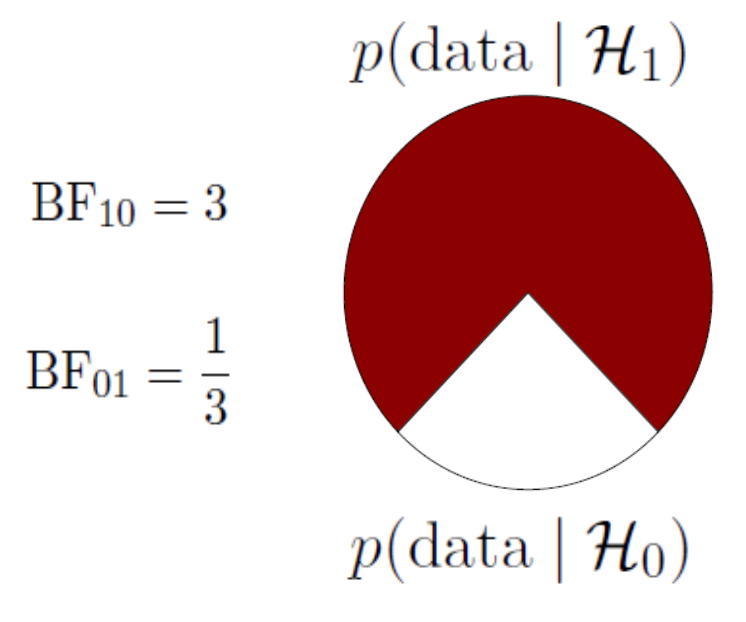
BF pizza
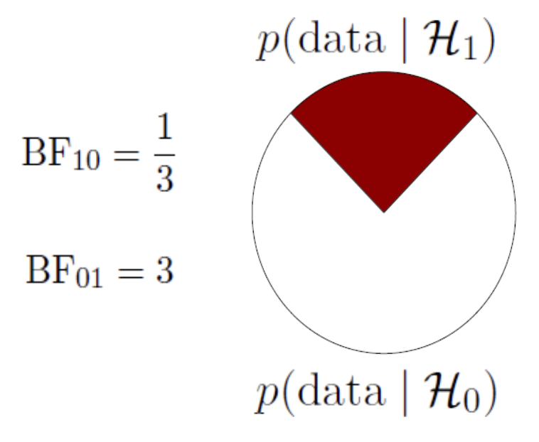
Advantages of the Bayes Factor
- Provides a continuous degree of evidence without requiring an all-or-none decision.
- Allows evidence to be monitored during data collection.
- Differentiates between “the data support H0” (evidence for absence) and “the data are not informative” (absence of evidence).
Bayesian ANOVA
ANOVA in regression formula
Show model predictions using dummy variables:
\[ y_i = b_0 + b_1 \times x_i. \] where \(x_i\) indicates whether we are in group A or group B, then \(b_1\) indicates the group difference (if equal to 0, then no group difference)
Two Models (1 predictor with 2 groups)
\[ y_i = b_0 + b_1 \times x_i \]
\[\mathcal{M_0}: b_1 = 0 \] \[\mathcal{M_1}: b_1 \sim Cauchy(0.707)\]
Two Models
\[\mathcal{M_0}: b_1 = 0 \] \[\mathcal{M_1}: b_1 \sim Cauchy(0.707)\]

Model Comparison
How well did each model predict the data?
\(\rightarrow\) Marginal likelihood
Marginal Likelihood of \(\mathcal{M}_1\)
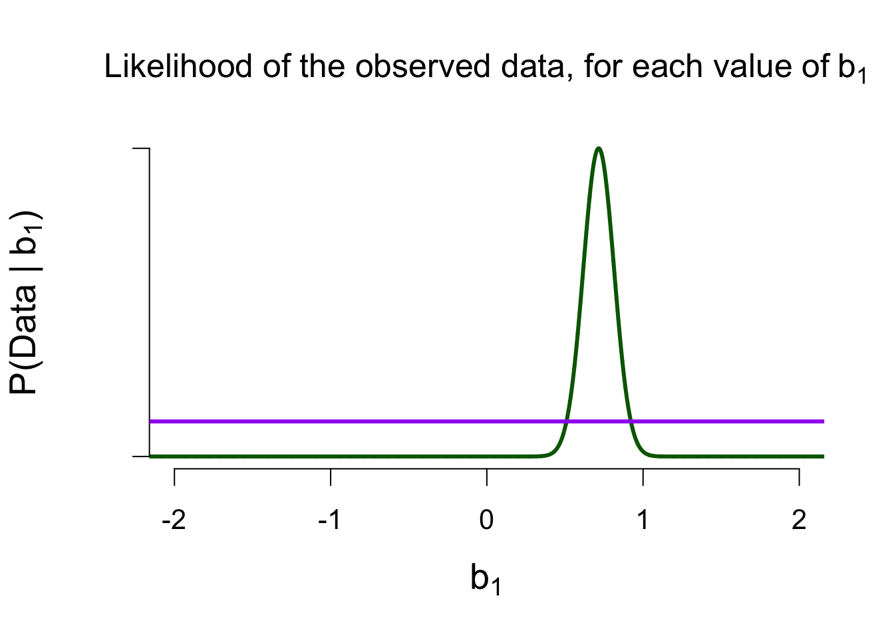
Marginal Likelihood of \(\mathcal{M}_0\)

Ratio of Marginal Likelihoods = Bayes Factor
\[\frac{P(data \mid \mathcal{M}_1)}{P(data \mid \mathcal{M}_0)} \approx 10,000\] The data are 10,000 times more likely under \(\mathcal{M}_1\) than under \(\mathcal{M}_0\)
Four Models (2 predictors with 2 groups each)
\[ tastiness = b_0 + b_1 \times alcoholic + b_2 \times correct\]
- \(\mathcal{M_0}\): model with only the intercept \(b_0\)
- \(\mathcal{M_A}\): model with the intercept \(b_0\) and the main effect of alcohol \(b_1\)
- \(\mathcal{M_C}\): model with the intercept \(b_0\) and the main effect of correct identification \(b_2\)
- \(\mathcal{M}_{A+C}\): model with the intercept \(b_0\) and the two main effects
Priors for \(\mathcal{M_A}\)

Priors for \(\mathcal{M_C}\)

Priors for \(\mathcal{M_{A+C}}\)
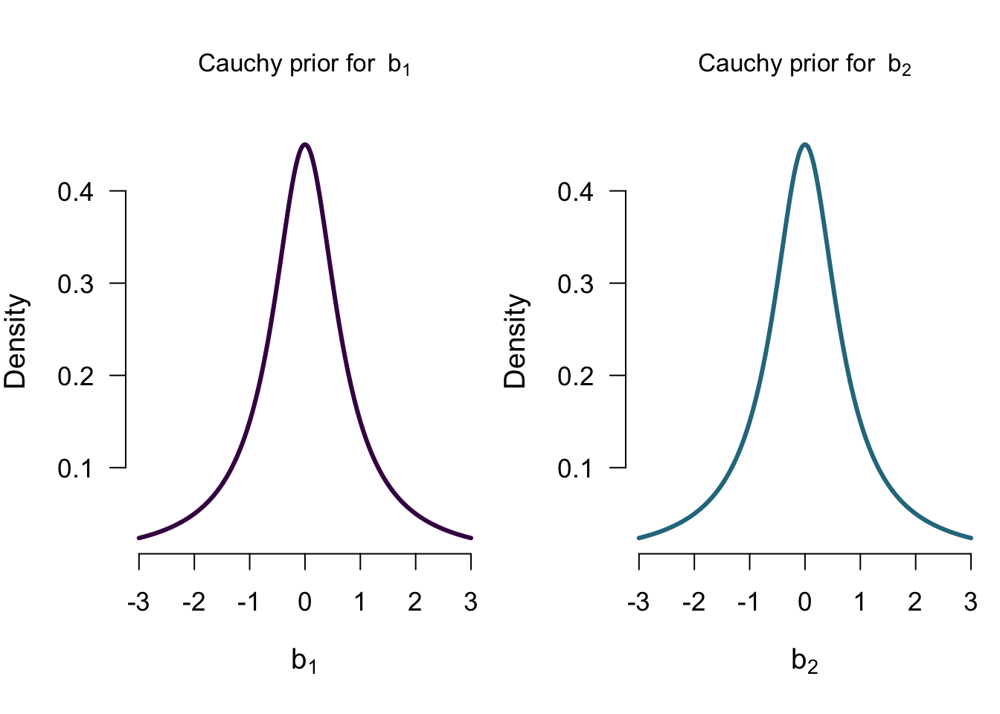
Model comparison results

Looking at the individual effects
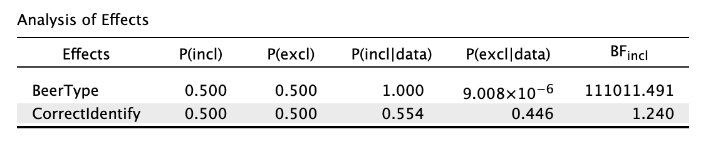
Single model inference

Single model inference: Posterior for BeerType

Single model inference: Posteriors for CorrectIdentify
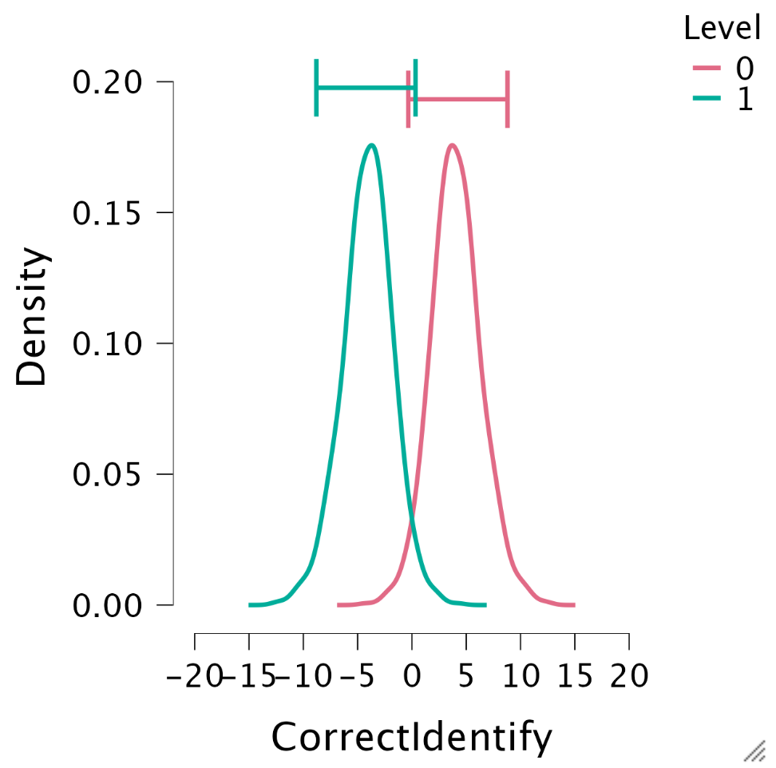
Lost?

JASP

End
Contact